、 、
译者
@SeanCheney ：
第 10 章介绍了人工神经网络
- 你将面临棘手的梯度消失问题
（ ） ： ， 。 ； - 要训练一个庞大的神经网络
， ， ； - 训练可能非常慢
； - 具有数百万参数的模型将会有严重的过拟合训练集的风险
， 。
在本章中
使用这些工具
梯度消失/爆炸问题
正如我们在第 10 章中所讨论的那样
不幸的是
虽然很早就观察到这种现象了
看一下 logistic 激活函数
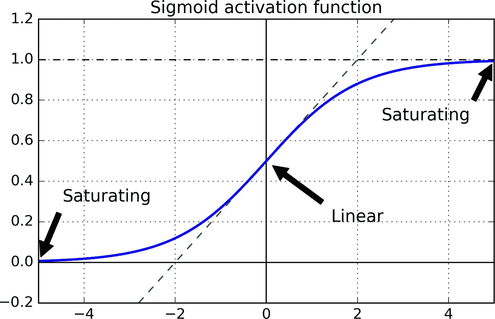
图 11-1 逻辑激活函数饱和
Glorot 和 He 初始化
Glorot 和 Bengio 在他们的论文中提出了一种显著缓解这个问题的方法fan-in和扇出fan-outfan[avg] = (fan[in] + fan[out]) / 2
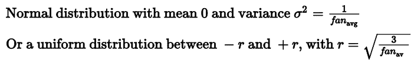
公式 11-1 Xavier 初始化
如果将公式 11-1 中的fan[avg]替换为fan[in]fan[in] = fan[out]时
一些论文针对不同的激活函数提供了类似的策略fan[avg]或fan[out]
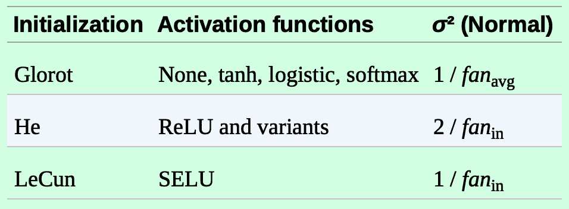
表 11-1 每种激活函数的初始化参数
默认情况下kernel_initializer="he_uniform"或kernel_initializer="he_normal"变更为 He 初始化
keras.layers.Dense(10, activation="relu", kernel_initializer="he_normal")
如果想让均匀分布的 He 初始化是基于fan[avg]而不是fan[in]
he_avg_init = keras.initializers.VarianceScaling(scale=2., mode='fan_avg',
distribution='uniform')
keras.layers.Dense(10, activation="sigmoid", kernel_initializer=he_avg_init)
非饱和激活函数
Glorot 和 Bengio 在 2010 年的论文中的一个见解是
但是
为了解决这个问题LeakyReLU[α](z)= max(αz, z)α定义了函数z < 0时函数的斜率α= 0.2α= 0.01α在训练期间在给定范围内随机α被授权在训练期间参与学习α变成可以像任何其他参数一样被反向传播修改的参数
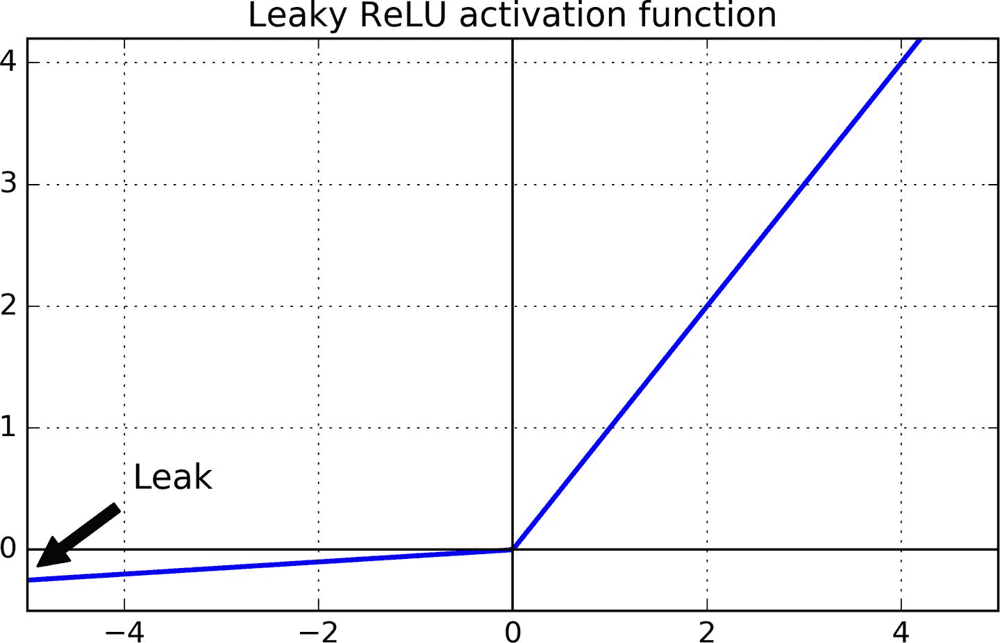
图 11-2 Leaky ReLU
最后
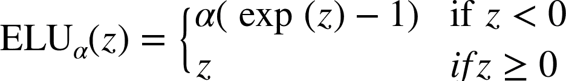
公式 11-2 ELU 激活函数
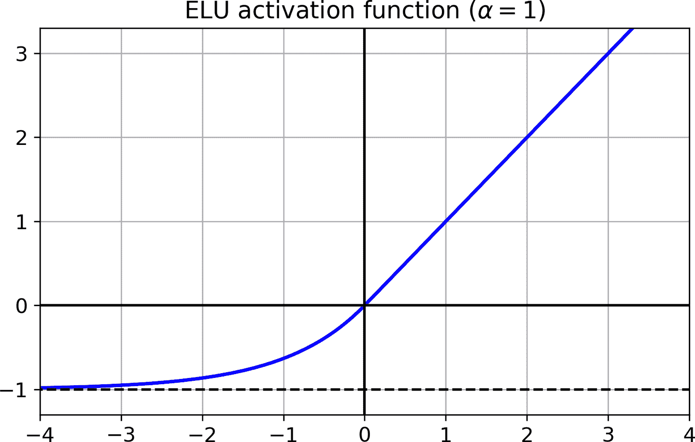
图 11-3 ELU 激活函数
ELU 看起来很像 ReLU 函数
- 它在
z < 0时取负值， 。 。 α定义为当z是一个大的负数时， 。 ， ， 。 - 它对
z < 0有一个非零的梯度， 。 - 如果
α等于 1， ， z = 0附近， ， z = 0附近回弹。
ELU 激活函数的主要缺点是计算速度慢于 ReLU 及其变体
2017 年的一篇文章中
-
输入特征必须是标准的
（ ， ） ； -
每个隐藏层的权重必须是 LeCun 正态初始化的
。 ， kernel_initializer="lecun_normal"； -
网络架构必须是顺序的
。 ， （ ） （ ， ） ， ， ； -
这篇论文只是说如果所有层都是紧密层才保证自归一
， 。
提示
那么深层神经网络的隐藏层应该使用哪个激活函数呢 ： 虽然可能会有所不同 ？ 一般来说 SELU > ELU > leaky ReLU ， 及其变体 （ > ReLU > tanh > sigmoid ） 如果网络架构不能保证自归一 。 则 ELU 可能比 SELU 的性能更好 ， 因为 SELU 在 （ z=0时不是平滑的） 如果关心运行延迟 。 则 leaky ReLU 更好 ， 如果你不想多调整另一个超参数 。 你可以使用前面提到的默认的 ， α值leaky ReLU 为 0.3 （ ） 如果有充足的时间和计算能力 。 可以使用交叉验证来评估其他激活函数 ， 如果神经网络过拟合 ， 则使用 RReLU; 如果您拥有庞大的训练数据集 ， 则为 PReLU ， 但是 。 因为 ReLU 是目前应用最广的激活函数 ， 许多库和硬件加速器都使用了针对 ReLU 的优化 ， 如果速度是首要的 ， ReLU 可能仍然是首选 ， 。
要使用 leaky ReLULeakyReLU层
model = keras.models.Sequential([
[...]
keras.layers.Dense(10, kernel_initializer="he_normal"),
keras.layers.LeakyReLU(alpha=0.2),
[...]
])
对于 PReLUPReLU()替换LeakyRelu(alpha=0.2)
对于 SELUactivation="selu"kernel_initializer="lecun_normal"
layer = keras.layers.Dense(10, activation="selu",
kernel_initializer="lecun_normal")
（ ） （ ）
尽管使用 He 初始化和 ELU
在 2015 年的一篇论文中StandardScaler
为了对输入进行零居中
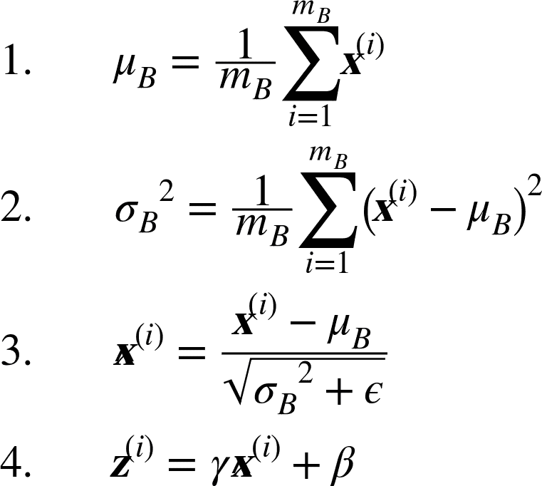
公式 11-3 批归一化算法
其中
-
μ[B]是整个小批量B的均值向量 -
σ[B]是输入标准差向量， 。 -
m[B]是小批量中的实例数量。 -
X_hat^(j)是以为零中心和标准化的实例i的输入向量。 -
γ是层的缩放参数的向量（ ） 。 -
⊗表示元素级别的相乘（ ） -
β是层的偏移参数（ ） （ ） -
ϵ是一个很小的数字， （ 10^-5） 。 （ ， ） 。 -
z^(i)是 BN 操作的输出： 。
在训练时BatchNormalization中使用的方法γβμσμ和σ都是在训练过程中计算的
Ioffe 和 Szegedy 证明
然而XW + bγ⊗(XW + b – μ)/σ + βεW′ = γ⊗W/σ和b′ = γ⊗(b – μ)/σ + βXW′ + b′W和bW'和b'
注意
你可能会发现 ： 训练相当缓慢 ， 这是因为每个周期都因为使用 BN 而延长了时间 ， 但是有了 BN 。 收敛的速度更快 ， 需要的周期数更少 ， 综合来看 。 需要的总时长变短了 ， 。
使用 Keras 实现批归一化
和 Keras 大部分功能一样BatchNormalization层就行
model = keras.models.Sequential([
keras.layers.Flatten(input_shape=[28, 28]),
keras.layers.BatchNormalization(),
keras.layers.Dense(300, activation="elu", kernel_initializer="he_normal"),
keras.layers.BatchNormalization(),
keras.layers.Dense(100, activation="elu", kernel_initializer="he_normal"),
keras.layers.BatchNormalization(),
keras.layers.Dense(10, activation="softmax")
])
这样就成了
打印一下模型的摘要
>>> model.summary()
Model: "sequential_3"
_________________________________________________________________
Layer (type) Output Shape Param #
=================================================================
flatten_3 (Flatten) (None, 784) 0
_________________________________________________________________
batch_normalization_v2 (Batc (None, 784) 3136
_________________________________________________________________
dense_50 (Dense) (None, 300) 235500
_________________________________________________________________
batch_normalization_v2_1 (Ba (None, 300) 1200
_________________________________________________________________
dense_51 (Dense) (None, 100) 30100
_________________________________________________________________
batch_normalization_v2_2 (Ba (None, 100) 400
_________________________________________________________________
dense_52 (Dense) (None, 10) 1010
=================================================================
Total params: 271,346
Trainable params: 268,978
Non-trainable params: 2,368
可以看到每个 BN 层添加了四个参数γβμ 和 σ4 × 784μ 和 σ是移动平均3,136 + 1,200 + 400除以 2
看下第一个 BN 层的参数
>>> [(var.name, var.trainable) for var in model.layers[1].variables]
[('batch_normalization_v2/gamma:0', True),
('batch_normalization_v2/beta:0', True),
('batch_normalization_v2/moving_mean:0', False),
('batch_normalization_v2/moving_variance:0', False)]
当在 Keras 中创建一个 BN 层时
>>> model.layers[1].updates
[<tf.Operation 'cond_2/Identity' type=Identity>,
<tf.Operation 'cond_3/Identity' type=Identity>]
BN 的论文作者建议在激活函数之前使用 BN 层use_bias=False
model = keras.models.Sequential([
keras.layers.Flatten(input_shape=[28, 28]),
keras.layers.BatchNormalization(),
keras.layers.Dense(300, kernel_initializer="he_normal", use_bias=False),
keras.layers.BatchNormalization(),
keras.layers.Activation("elu"),
keras.layers.Dense(100, kernel_initializer="he_normal", use_bias=False),
keras.layers.BatchNormalization(),
keras.layers.Activation("elu"),
keras.layers.Dense(10, activation="softmax")
])
BatchNormalization类可供调节的参数不多momentumBatchNormalization在更新指数移动平均时使用的vV_hat:
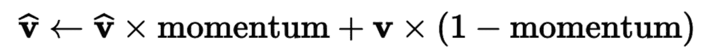
momentum的最优值通常接近于 1
另一个重要的超参数是axisbatch size,features]axis=[1, 2]
在训练和训练之后
class BatchNormalization(keras.layers.Layer):
[...]
def call(self, inputs, training=None):
[...]
call()方法具体实现了方法trainingNonefit()方法在训练中将其设为 1call()方法中添加一个参数training
BatchNormalization已经成为了深度神经网络中最常使用的层fixed-update
梯度裁剪
减少梯度爆炸问题的一种常用技术是在反向传播过程中剪切梯度clipvalue或clipnorm参数
optimizer = keras.optimizers.SGD(clipvalue=1.0)
model.compile(loss="mse", optimizer=optimizer)
优化器会将梯度向量中的每个值裁剪到 -1.0 和 1.0 之间[0.9, 100.0][0.9, 1.0]clipnorm靠范数裁剪clipnorm = 1.0[0.9, 100.0]就会被裁剪为[0.00899964, 0.9999595]
复用预训练层
从零开始训练一个非常大的 DNN 通常不是一个好主意
例如
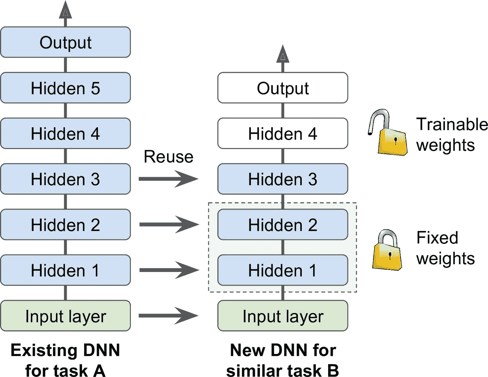
图 11-4 复用预训练层
笔记
如果新任务的输入图像与原始任务中使用的输入图像的大小不一致 ： 则必须添加预处理步骤以将其大小调整为原始模型的预期大小 ， 更一般地说 。 如果输入具有类似的低级层次的特征 ， 则迁移学习将很好地工作 ， 。
原始模型的输出层通常要替换掉
提示
任务越相似 ： 可复用的层越多 ， 对于非常相似的任务 。 可以尝试保留所有的吟唱层 ， 替换输出层 ， 。
先将所有复用的层冻结
如果效果不好
用 Keras 进行迁移学习
看一个例子positive=shirt, negative=sandal
首先
model_A = keras.models.load_model("my_model_A.h5")
model_B_on_A = keras.models.Sequential(model_A.layers[:-1])
model_B_on_A.add(keras.layers.Dense(1, activation="sigmoid"))
model_A 和 model_B_on_A 公用了一些层model_B_on_A时model_Amodel_Aclone.model()clone.model()不能克隆权重
model_A_clone = keras.models.clone_model(model_A)
model_A_clone.set_weights(model_A.get_weights())
现在就可以训练model_B_on_A了trainable属性设为False
for layer in model_B_on_A.layers[:-1]:
layer.trainable = False
model_B_on_A.compile(loss="binary_crossentropy", optimizer="sgd",
metrics=["accuracy"])
笔记
冻结或解冻模型之后 ： 都需要编译 ， 。
训练几个周期之后
history = model_B_on_A.fit(X_train_B, y_train_B, epochs=4,
validation_data=(X_valid_B, y_valid_B))
for layer in model_B_on_A.layers[:-1]:
layer.trainable = True
optimizer = keras.optimizers.SGD(lr=1e-4) # the default lr is 1e-2
model_B_on_A.compile(loss="binary_crossentropy", optimizer=optimizer,
metrics=["accuracy"])
history = model_B_on_A.fit(X_train_B, y_train_B, epochs=16,
validation_data=(X_valid_B, y_valid_B))
最终结果
>>> model_B_on_A.evaluate(X_test_B, y_test_B)
[0.06887910133600235, 0.9925]
你相信这个结果吗
无监督预训练
假设你想要解决一个复杂的任务
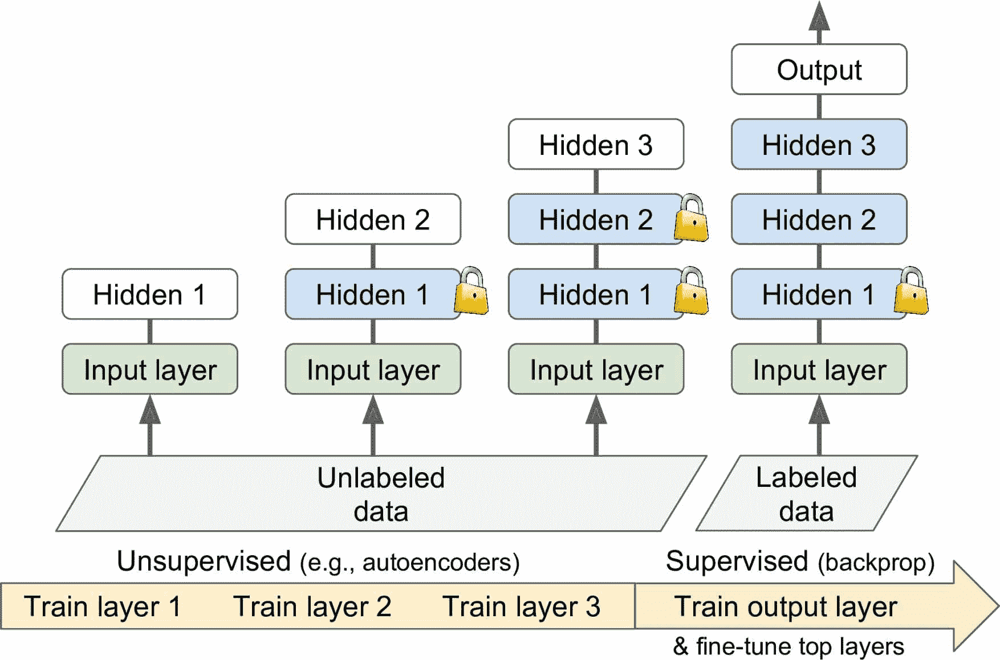
图 11-5 无监督的预训练
这是 Geoffrey Hinton 和他的团队在 2006 年使用的技术
在辅助任务上预训练
如果没有多少标签训练数据
例如
对于自然语言处理
笔记
自监督学习是当你从数据自动生成标签 ： 然后在标签数据上使用监督学习训练模型 ， 因为这种方法无需人工标注 。 最好将其分类为无监督学习 ， 。
更快的优化器
训练一个非常大的深度神经网络可能会非常缓慢
剧透
本节的结论是 ： 几乎总是应该使用 ， Adam_optimization所以如果不关心它是如何工作的 ， 只需使用 ， AdamOptimizer替换GradientDescentOptimizer然后跳到下一节 ， 只需要这么小的改动 ！ 训练通常会快几倍 ， 但是 。 Adam 优化确实有三个可以调整的超参数 ， 加上学习率 （ ） 默认值通常工作的不错 。 但如果您需要调整它们 ， 知道他们怎么实现的可能会有帮助 ， Adam 优化结合了来自其他优化算法的几个想法 。 所以先看看这些算法是有用的 ， 。
动量优化
想象一下
回想一下J(θ)相对于权重θ的梯度∇θJ(θ)η来更新权重θθ ← θ – η ∇[θ]J(θ)
动量优化很关心以前的梯度mηβ
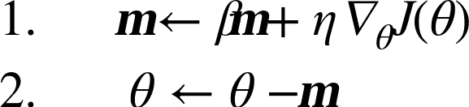
公式 11-4 动量算法
可以很容易验证η乘以1/(1-β)β = 0.9
笔记
由于动量的原因 ： 优化器可能会超调一些 ， 然后再回来 ， 再次超调 ， 并在稳定在最小值之前多次振荡 ， 这就是为什么在系统中有一点摩擦的原因之一 。 它消除了这些振荡 ： 从而加速了收敛 ， 。
在 Keras 中实现动量优化很简单SGD优化器momentum超参数
optimizer = keras.optimizers.SGD(lr=0.001, momentum=0.9)
动量优化的一个缺点是它增加了另一个超参数来调整
Nesterov 加速梯度
Yurii Nesterov 在 1983 年提出的动量优化的一个小变体几乎总是比普通的动量优化更快θ+βm而不是在θ处测量的
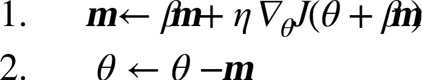
公式 11-5 Nesterov 加速梯度算法
这个小小的调整是可行的∇1代表在起点θ处测量的损失函数的梯度∇2代表位于θ+βm的点处的梯度
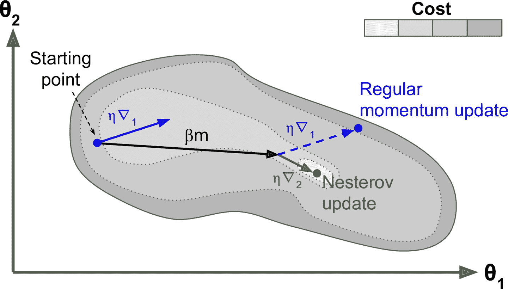
图 11-6 常规 vs Nesterov 动量优化
可以看到∇1继续推进越过山谷∇2推回山谷的底部
与常规的动量优化相比SGD时设置nesterov=True
optimizer = keras.optimizers.SGD(lr=0.001, momentum=0.9, nesterov=True)
AdaGrad
再次考虑细长碗的问题
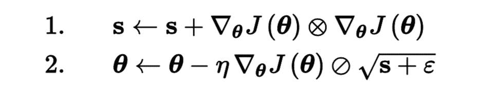
公式 11-6 AdaGrad 算法
第一步将梯度的平方累加到向量s中s的每个元素s[i]计算s[i] ← s[i] + (∂J(θ)/∂θ[i])^2s[i]累加损失函数对参数θ[i]的偏导数的平方i维陡峭s[i]将变得越来越大
第二步几乎与梯度下降相同(s+ε)^0.5缩小 ⊘符号表示元素分割ε是避免被零除的平滑项10^(-10)θ[i]同时计算
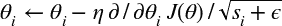
简而言之η
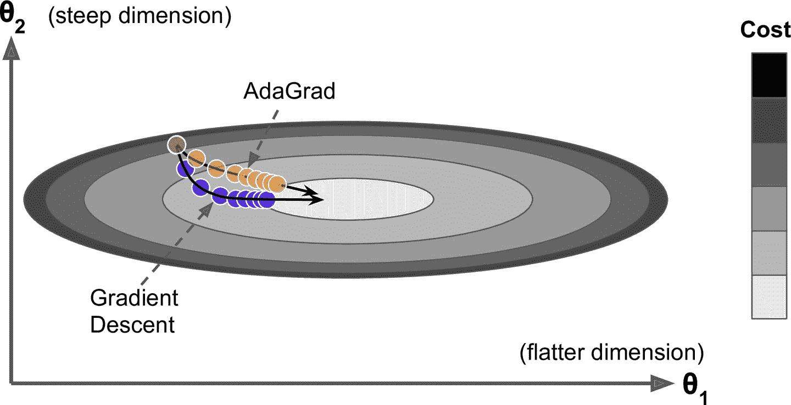
图 11-7 AdaGard vs 梯度下降
对于简单的二次问题Adagrad 优化器
RMSProp
前面看到
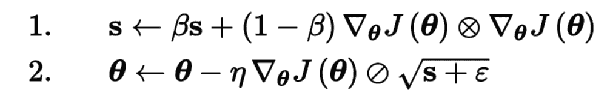
公式 11-7 RMSProp 算法
它的衰变率β通常设定为 0.9
正如所料RMSProp优化器
optimizer = keras.optimizers.RMSprop(lr=0.001, rho=0.9)
除了非常简单的问题
Adam 和 Nadam 优化
Adam
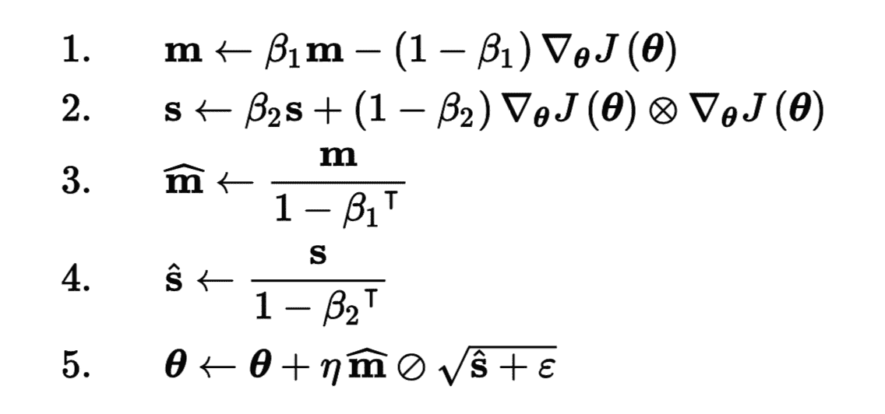
公式 11-8 Adam 算法
T代表迭代次数
如果你只看步骤 1, 2 和 51 - β1倍m和s初始化为 0m和s
动量衰减超参数β1通常初始化为 0.9β2通常初始化为 0.999ε通常被初始化为一个很小的数10^(-7)Adam类的默认值keras.backend.epsilon()10^(-7)keras.backend.set_epsilon()更改
optimizer = keras.optimizers.Adam(lr=0.001, beta_1=0.9, beta_2=0.999)
实际上η的调整较少η= 0.001
提示
如果读者对这些不同的技术感到头晕脑胀 ： 不用担心 ， 本章末尾会提供一些指导 ， 。
最后
AdaMax
公式 11-8 的第 2 步中s的梯度平方εs的平方根更新参数s
Nadam
Nadam 优化是 Adam 优化加上了 Nesterov 技巧
警告
自适应优化方法 ： 包括 RMSProp （ Adam ， Nadam ， 总体不错 ） 收敛更快 ， 但是 Ashia C. Wilson 在 2017 年的一篇论文中说 。 这些自适应优化方法在有些数据集上泛化很差 ， 所以当你对模型失望时 。 可以尝试下普通的 Nesterov 加速梯度 ， 你的数据集可能只是对自适应梯度敏感 ： 另外要调研最新的研究进展 。 因为这个领域进展很快 ， 。
目前所有讨论的优化方法都是基于一阶偏导n^2个黑森矩阵n是参数个数n个雅可比矩阵
训练稀疏模型
所有刚刚提出的优化算法都会产生紧密模型这意味着大多数参数都是非零的 ， 如果你在运行时需要一个非常快的模型 。 或者如果你需要它占用较少的内存 ， 你可能更喜欢用一个稀疏模型来代替 ， 。
实现这一点的一个微不足道的方法是像平常一样训练模型然后丢掉微小的权重 ， 将它们设置为 0 （ ） 但这通常不会生成一个稀疏的模型 。 而且可能使模型性能下降 ， 。
更好的选择是在训练过程中应用强 ℓ1 正则化因为它会推动优化器尽可能多地消除权重 ， 如第 4 章关于 Lasso 回归的讨论 （ ） 。
如果这些技术可能仍然不成就查看 TensorFlow Model Optimization Toolkit (TF-MOT) ， 它提供了一些剪枝 API ， 可以在训练中根据量级迭代去除权重 ， 。
表 11-2 比较了讨论过的优化器*是差**是平均***是好
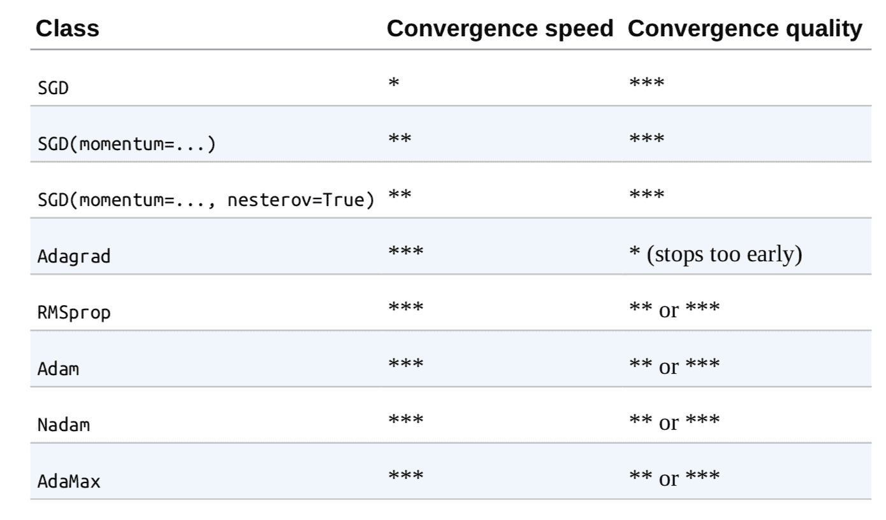
表 11-2 优化器比较
学习率调整
找到一个好的学习速率非常重要
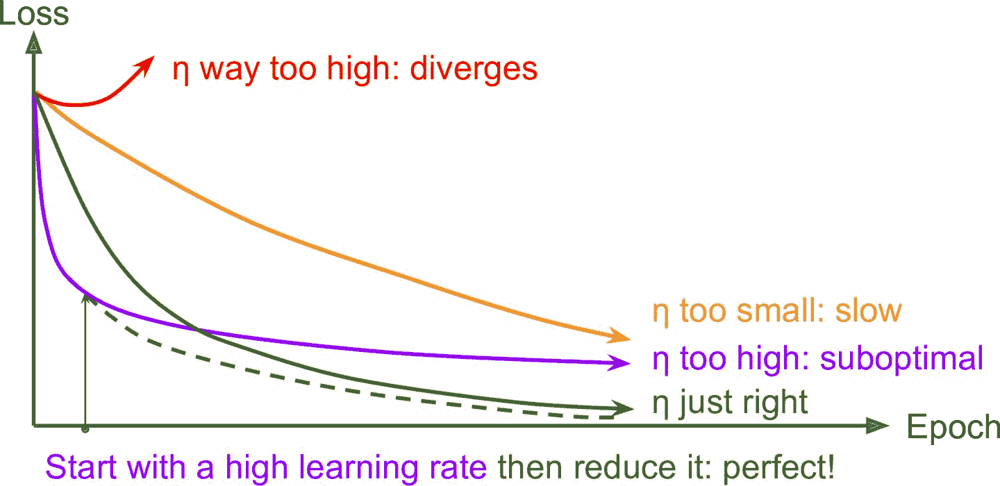
图 11-8 不同学习速率的学习曲线
正如第 10 章讨论过的
但除了固定学习率
幂调度:
设学习率为迭代次数t的函数η(t) = η[0] (1 + t/s)^cη[0]cs是超参数s步后η[0]/ 2s步η[0] / 3η[0] / 4η[0] / 5η[0]和sc
指数调度:
将学习率设置为迭代次数t的函数η(t) = η[0] 0.1^(t/s)
预定的分段恒定学习率
先在几个周期内使用固定的学习率η[0] = 0.1η[0] = 0.001
性能调度
每N步测量验证误差λ倍
1 循环调度
与其它方法相反η[0]线性增加到η[1]然后在后半个周期内再线性下降到η[0]η[1]η[0]是η[1]的十分之一
Andrew Senior 等人在 2013 年的论文比较了使用动量优化训练深度神经网络进行语音识别时一些最流行的学习率调整的性能
使用 Keras 实现学习率幂调整非常简单decay超参数
optimizer = keras.optimizers.SGD(lr=0.01, decay=1e-4)
decay是sc等于 1
指数调度和分段恒定学习率也很简单
def exponential_decay_fn(epoch):
return 0.01 * 0.1**(epoch / 20)
如果不想硬实现η[1]和s
def exponential_decay(lr0, s):
def exponential_decay_fn(epoch):
return lr0 * 0.1**(epoch / s)
return exponential_decay_fn
exponential_decay_fn = exponential_decay(lr0=0.01, s=20)
然后LearningRateScheduler调回fit()
lr_scheduler = keras.callbacks.LearningRateScheduler(exponential_decay_fn)
history = model.fit(X_train_scaled, y_train, [...], callbacks=[lr_scheduler])
LearningRateScheduler会在每个周期开始时更新优化器的learning_rate属性keras.optimizers.schedules方法
调度函数可以将当前学习率作为第二个参数0.1^(1/20)
def exponential_decay_fn(epoch, lr):
return lr * 0.1**(1 / 20)
该实现依靠优化器的初始学习率
当保存模型时fit()方法时fit()方法的参数initial_epoch
对于分段恒定学习率调度LearningRateScheduler调回fit()方法
def piecewise_constant_fn(epoch):
if epoch < 5:
return 0.01
elif epoch < 15:
return 0.005
else:
return 0.001
对于性能调度ReduceLROnPlateau调回fit()
lr_scheduler = keras.callbacks.ReduceLROnPlateau(factor=0.5, patience=5)
最后tf.keras还提供了一种实现学习率调度的方法keras.optimizers.schedules中一种可用的调度定义学习率exponential_decay_fn()
s = 20 * len(X_train) // 32 # number of steps in 20 epochs (batch size = 32)
learning_rate = keras.optimizers.schedules.ExponentialDecay(0.01, s, 0.1)
optimizer = keras.optimizers.SGD(learning_rate)
这样又好看又简单tf.keras专有的
对于 1 循环调度self.model.optimizer.lr更新学习率
总结一下
通过正则化避免过拟合
有四个参数
有数千个参数
ℓ1 和 ℓ2 正则
就像第 4 章中对简单线性模型所做的那样
layer = keras.layers.Dense(100, activation="elu",
kernel_initializer="he_normal",
kernel_regularizer=keras.regularizers.l2(0.01))
l2函数返回的正则器会在训练中的每步被调用keras.regularizers.l1()keras.regularizers.l1_l2()
因为想对模型中的所有层使用相同的正则器functools.partial()
from functools import partial
RegularizedDense = partial(keras.layers.Dense,
activation="elu",
kernel_initializer="he_normal",
kernel_regularizer=keras.regularizers.l2(0.01))
model = keras.models.Sequential([
keras.layers.Flatten(input_shape=[28, 28]),
RegularizedDense(300),
RegularizedDense(100),
RegularizedDense(10, activation="softmax",
kernel_initializer="glorot_uniform")
])
丢弃
丢弃是深度神经网络最流行的正则化方法之一
这是一个相当简单的算法pp称为丢弃率
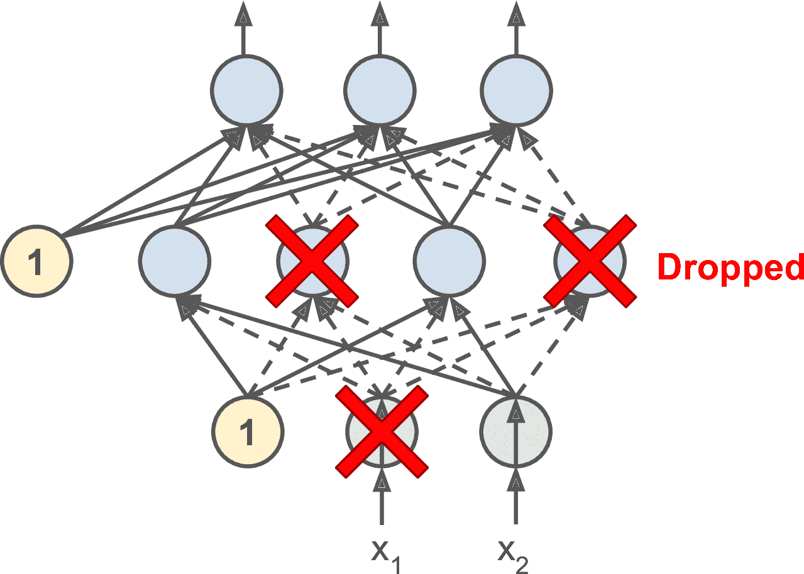
图 11-9 丢弃正则化
这个具有破坏性的方法竟然行得通
了解丢弃的另一种方法是认识到每个训练步骤都会产生一个独特的神经网络2 ^ N个可能的网络
提示
在实际中 ： 可以只将丢弃应用到最上面的一到三层 ， 包括输出层 （ ） 。
有一个小而重要的技术细节p = 50%1-p
要使用 Kera 实现丢弃keras.layers.Dropout层
model = keras.models.Sequential([
keras.layers.Flatten(input_shape=[28, 28]),
keras.layers.Dropout(rate=0.2),
keras.layers.Dense(300, activation="elu", kernel_initializer="he_normal"),
keras.layers.Dropout(rate=0.2),
keras.layers.Dense(100, activation="elu", kernel_initializer="he_normal"),
keras.layers.Dropout(rate=0.2),
keras.layers.Dense(10, activation="softmax")
])
警告
因为丢弃只在训练时有用 ： 比较训练损失和验证损失会产生误导 ， 特别地 。 一个模型可能过拟合训练集 ， 但训练和验证损失相近 ， 因此一定要不要带丢弃评估训练损失 。 比如训练后 （ ） 。
如果观察到模型过拟合keep_prob超参数keep_prob
丢弃似乎减缓了收敛速度
提示
如果想对一个自归一化的基于 SELU 的网络使用正则 ： 应该使用 alpha 丢弃 ， 这是一个丢弃的变体 ： 可以保留输入的平均值和标准差 ， 它是在 SELU 的论文中提出的 （ 因为常规的丢弃会破会自归一化 ， ） 。
（ ） （ ）
Yarin Gal 和 Zoubin Ghahramani 在 2016 的一篇论文中
-
首先
， （ ） ， 。 -
第二
， ， ， ， ， 。
如果这听起来像一个广告
y_probas = np.stack([model(X_test_scaled, training=True)
for sample in range(100)])
y_proba = y_probas.mean(axis=0)
我们只是在训练集上做了 100 次预测training=True保证丢弃是活跃的predict()返回一个矩阵[10000,10]y_proba是一个形状[100,10000,10]的数组axis=0y_proba[10000,10]的数组
>>> np.round(model.predict(X_test_scaled[:1]), 2)
array([[0\. , 0\. , 0\. , 0\. , 0\. , 0\. , 0\. , 0.01, 0\. , 0.99]],
dtype=float32)
这个模型大概率认定这张图属于类 9
再看看开启丢弃的预测
>>> np.round(y_probas[:, :1], 2)
array([[[0\. , 0\. , 0\. , 0\. , 0\. , 0.14, 0\. , 0.17, 0\. , 0.68]],
[[0\. , 0\. , 0\. , 0\. , 0\. , 0.16, 0\. , 0.2 , 0\. , 0.64]],
[[0\. , 0\. , 0\. , 0\. , 0\. , 0.02, 0\. , 0.01, 0\. , 0.97]],
[...]
当开启丢弃
>>> np.round(y_proba[:1], 2)
array([[0\. , 0\. , 0\. , 0\. , 0\. , 0.22, 0\. , 0.16, 0\. , 0.62]],
dtype=float32)
模型仍认为这张图属于类 9
>>> y_std = y_probas.std(axis=0)
>>> np.round(y_std[:1], 2)
array([[0\. , 0\. , 0\. , 0\. , 0\. , 0.28, 0\. , 0.21, 0.02, 0.32]],
dtype=float32)
显然
>>> accuracy = np.sum(y_pred == y_test) / len(y_test)
>>> accuracy
0.8694
笔记
蒙特卡洛样本的数量是一个可以调节的超参数 ： 这个数越高 。 预测和不准确度的估计越高 ， 但是 。 如果样本数翻倍 ， 推断时间也要翻倍 ， 另外 。 样本数超过一定数量 ， 提升就不大了 ， 因此要取决于任务本身 。 在延迟和准确性上做取舍 ， 。
如果模型包含其它层行为特殊的层Dropout层替换为MCDropout类
class MCDropout(keras.layers.Dropout):
def call(self, inputs):
return super().call(inputs, training=True)
这里Dropout的子类call()training参数变为TrueAlphaDropout的子类定义一个MCAlphaDropoutMCDropout而不是DropoutDropout层为MCDropout层
总之
最大范数正则化
另一种在神经网络中非常流行的正则化技术被称为最大范数正则化w||w||₂ < rr是最大范数超参数||·||₂是 l2 范数
最大范数正则没有添加正则损失项到总损失函数中
我们通常通过在每个训练步骤之后计算||w||₂W
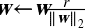
减少r增加了正则化的量
要在 Keras 中实现最大范数正则kernel_constraint的max_norm()为一个合适的值
keras.layers.Dense(100, activation="elu", kernel_initializer="he_normal",
kernel_constraint=keras.constraints.max_norm(1.))
每次训练迭代之后fit()方法会调用max_norm()返回的对象bias_constraint约束偏置项
max_norm()函数有一个参数axisaxis=0axisaxis=[0,1,2]
总结和实践原则
本章介绍了许多方法
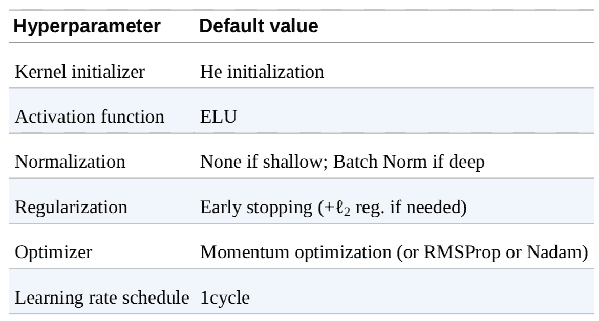
表 11-3 默认 DNN 配置
如果网络只有紧密层
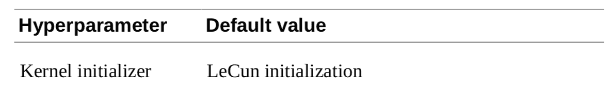
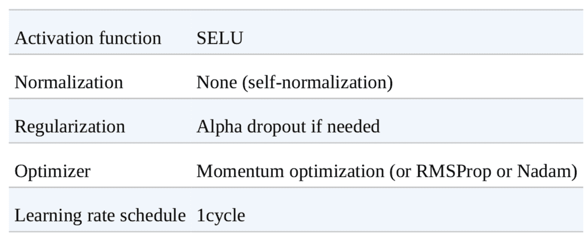
表 11-4 自归一化网络的 DNN 配置
不要忘了归一化输入特征
虽然这些指导可以应对大部分情况
-
如果需要系数模型
， （ ， ） 。 ， ， ， 。 -
如果需要一个地延迟模型
（ ） ， ， ， ， 。 。 ， ， 。 ， 。 -
如果搭建的是风险敏感的模型
， ， ， 。
有了这些原则
练习
-
使用 He 初始化随机选择权重
， ？ -
可以将偏置初始化为 0 吗
？ -
说出 SELU 激活功能与 ReLU 相比的三个优点
。 -
在哪些情况下
， ： ， （ ） ， ， ， ？ -
如果将
momentum超参数设置得太接近 1（ ， ） ， ？ -
请列举您可以生成稀疏模型的三种方法
。 -
丢弃是否会减慢训练
？ （ ） ？ ？ -
在 CIFAR10 图片数据集上训练一个深度神经网络
： - 建立一个 DNN
， ， ， 。 - 使用 Nadam 优化和早停
， ， keras.datasets.cifar10.load_data()加载数据。 32x32的图片（ ， ） ， 。 ， 。 - 现在尝试添加批归一化并比较学习曲线
： ？ ？ ？ - 尝试用 SELU 替换批归一化
， ， （ ， ， ， ） 。 - 使用 alpha 丢弃正则化模型
。 ， ， 。 - 用 1 循环调度重新训练模型
， 。
- 建立一个 DNN
参考答案见附录 A